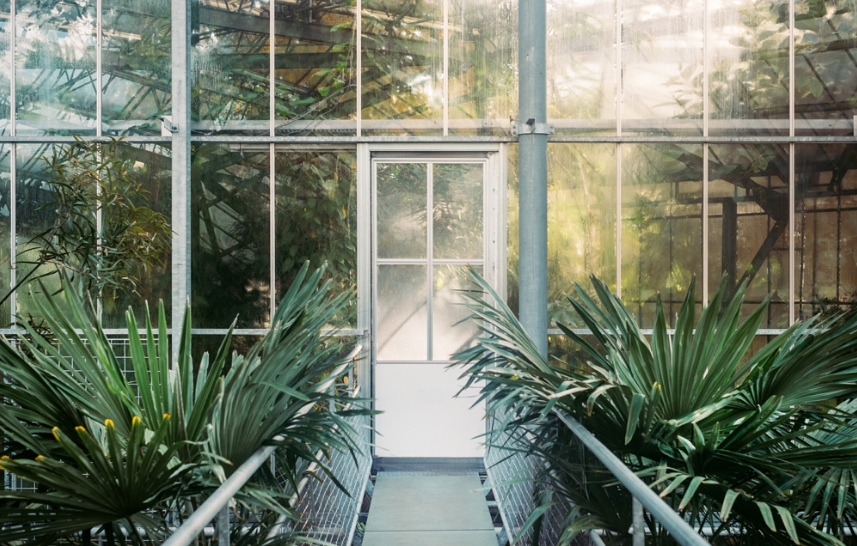
питомники
питомники


Стоп Пуск
Комплекс услуг по ландшафтному дизайну разных объектов в Харькове и в Украине .Экологичные и практичные материалы для ландшафтного дизайна из собственного
питомника в Украине, в Харькове,c аукциона в Голландии и России .
Оформление событий и помещений с выездом дизайнера.
Комнатные ,экзотические, инопланетные, млекопитающиеся, агрессивные и дикие растения.
Свежие цветы, модные букеты, самые интересные аксессуары и самые последние достижения флористической моды, мастерство, стиль, вкус и качество — все это Салон Цветы «FLOVERS SHOP». При этом в аранжировку цветов обязательно вносится свой определенный, отличительный шарм. Флористам салона интересно работать в разных стилях, учитывая современные тенденции и пожелания покупателей.
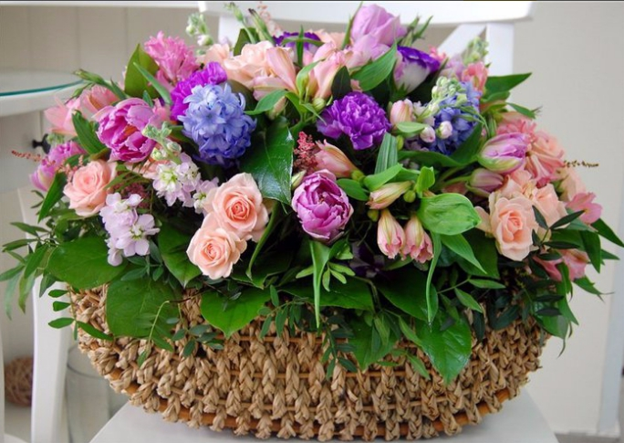 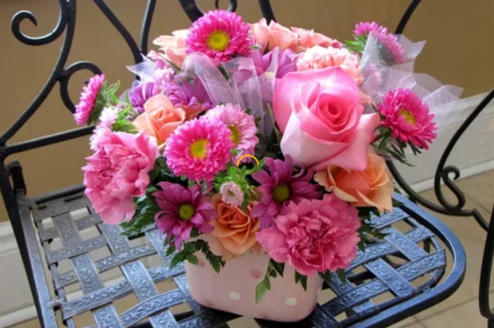 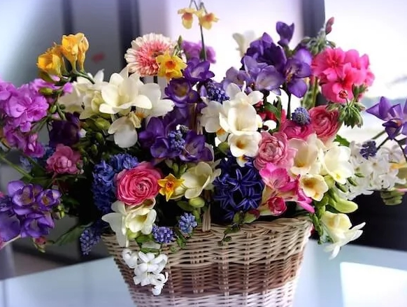 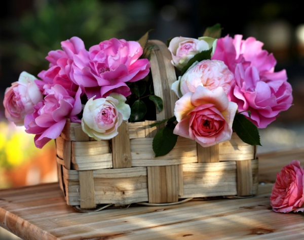корзины с цветами
Невероятно ярко и элегантно выглядят корзины из живых цветов. Получив такой подарок с головокружительным ароматом, виновница торжества будет в полном восторге. Монобукет или собранная из разных по цвету и форме цветов композиция, оформленная в изысканную корзинку с длинной ручкой, помогут без лишних слов выразить симпатию и уважение. Круглосуточная служба доставки предлагает уникальную возможность порадовать любимого человека благоухающим презентом в любое время дня и ночи. Корзины цветов для жителей города Киев будут доставлены максимально быстро и в великолепном виде.
Корзина из цветов: варианты наполнения
У каждого человека есть любимые цветочки. Кто-то без ума от благородных роз, другие млеют при виде нежных тюльпанов, третьи предпочитают скромные хризантемы. Благодаря профессиональной работе флористов и дизайнеров, из представленного ассортимента можно легко подобрать букет цветов в корзине, который будет соответствовать всем представлениям клиента об идеальной флористической композиции. Демократичная цена позволяет приобрести огромную цветочную поляну по доступной стоимости. Для юных леди предложены корзинки с тюльпанами, милыми и нежными, как расцветающая девичья красота. В обрамлении сочной зелени они выглядят оригинально, в любое время года внося в дом весеннюю свежесть. Представительницы прекрасного пола по достоинству оценят шикарные корзины роз нежных кремовых тонов и вызывающе красных оттенков. Они станут живым украшением для любого праздника.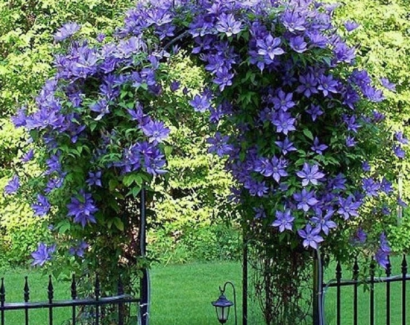 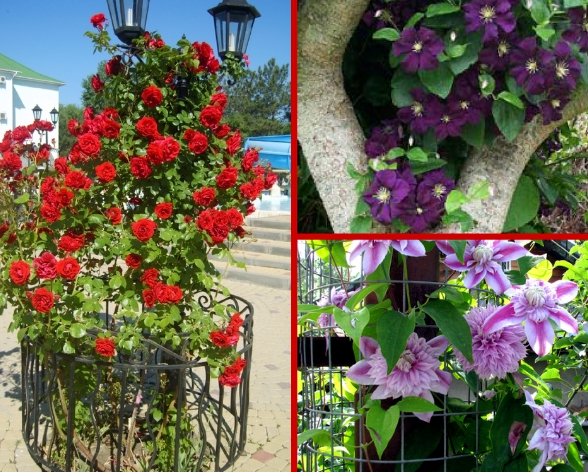 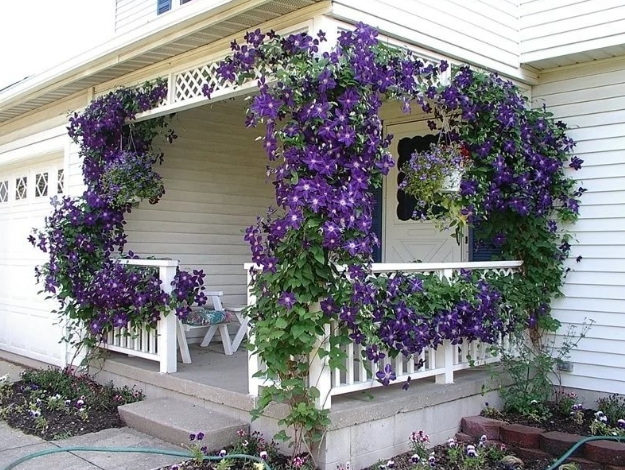 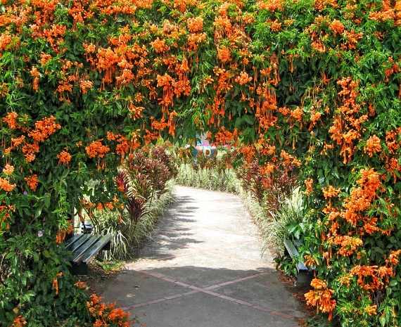плетущиеся цветы
Бесспорно, гордостью каждого хозяина является приусадебный участок, оформленный и озеленённый с помощью вьющихся цветущих растений и окаймлённый кружевным забором, который сможет удивить всех тем, что будет казаться ковром, как будто сотканным из листьев и необычных цветов. Наверное, сама природа предусмотрела создание вьющихся растений для ограждений, чтобы они смогли занять достойное место при украшении приусадебного участка, способствовать видоизменению и преображению всей территории. ёПлетущиеся и вьющиеся растения — одна из важных составляющих озеленения участка, так как только они смогут создать буйную зелень и цветение в тех местах, где другие растения вы не смогли бы посадить.
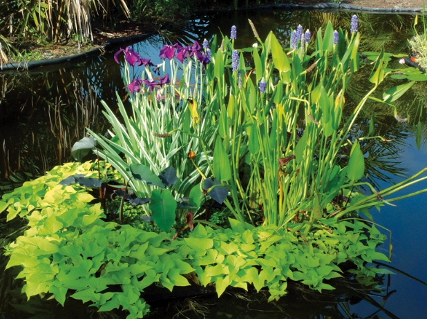 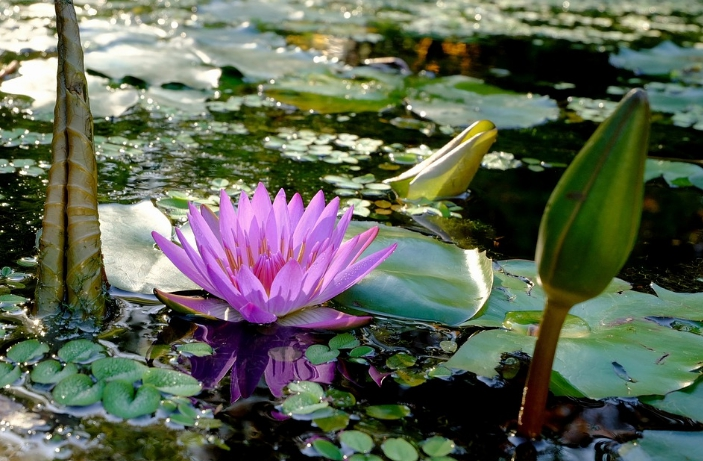 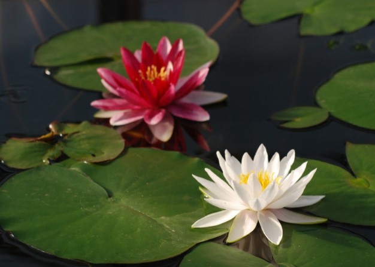 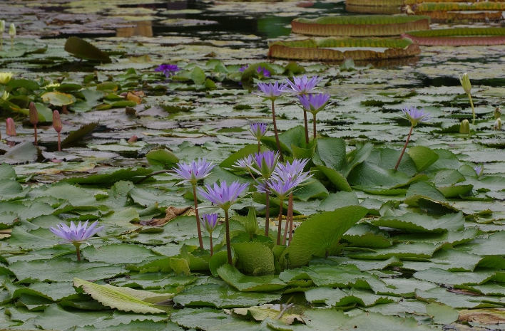водные цветы
Водные растения, живущие в садовых водоёмах, нужны не только для декорирования водной глади и береговой линии. Некоторые из них, листья которых находятся на поверхности водоёма, защищают его обитателей от перегрева в сильную жару. Другие, являясь мощным биофильтром, очищают воду от бактерий и вредных примесей. Кроме того, водные растения служат еще и кормом для обитателей водоёма. Площадь водной глади, занимаемая растениями, не должна превышать 20% от всей площади водоёма. Также надо помнить, что для успешного роста и развития водных растений необходимо, чтобы поверхность воды освещалась солнцем в течение 5-6 часов в день. Водные растения делятся на глубоководные, плавающие и мелководные. Глубоководные растения Корни этих растений расположены в донном грунте, а листья и цветки - на поверхности воды.
Плавающие растения
За способность этих растений эффективно очищать воду их называют биофильтрами. Благодаря разнообразным розеткам листьев, у которых в течение лета по периферии нарастают дочерние розетки, плавающие растения выглядят весьма интересно. Им не нужно закрепляться в донном грунте, так как все питательные вещества плавающие растения получают из воды, которую впитывают корнями, находящимися в толще этой самой воды.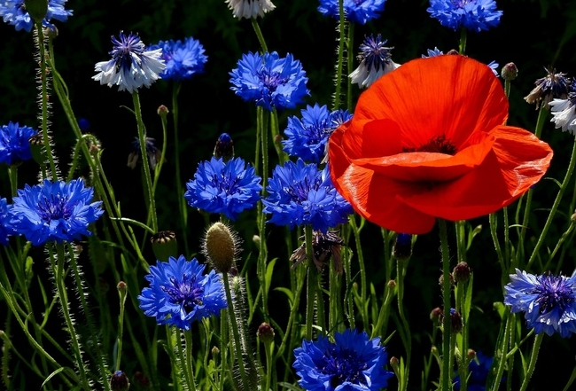 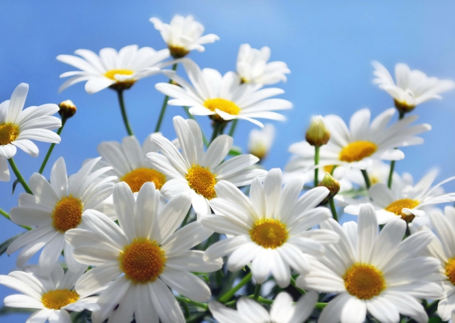 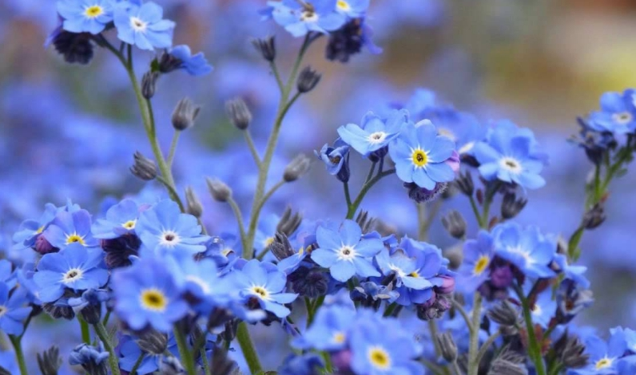полевые цветы
sdfghjkxc vbnmdfghjk guh yyyy yyyyyhhh hhhhhhh hhhhh hhhhh hhh hhhhhhhhh hhhhhhh
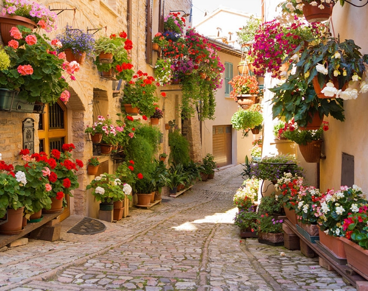

цветы для дачи
sdfghjkxc vbnmdfghjk guh yyyy yyyyyhhh hhhhhhh hhhhh hhhhh hhh hhhhhhhhh hhhhhhh
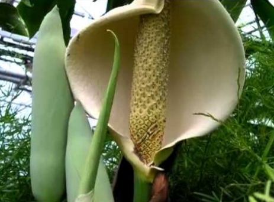 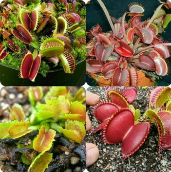 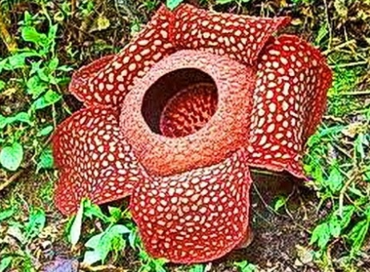 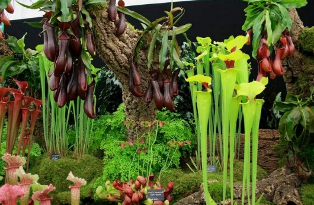зубастики и прочая милость
sdfghjkxc vbnmdfghjk guh yyyy yyyyyhhh hhhhhhh hhhhh hhhhh hhh hhhhhhhhh hhhhhhh
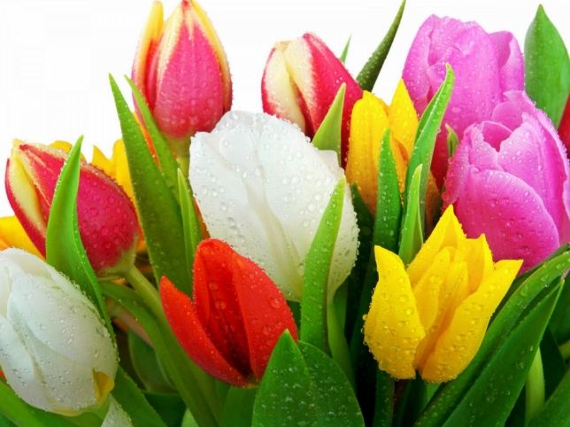

букеты цветов
sdfghjkxc vbnmdfghjk guh yyyy yyyyyhhh hhhhhhh hhhhh hhhhh hhh hhhhhhhhh hhhhhhh
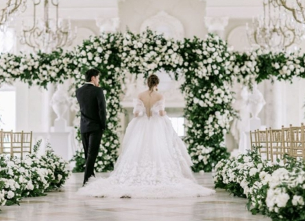 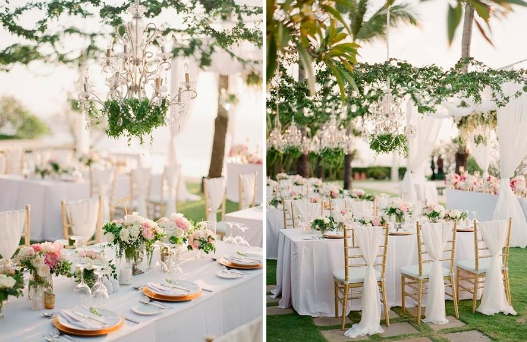 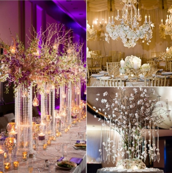
оформление цветами
sdfghjkxc vbnmdfghjk guh yyyy yyyyyhhh hhhhhhh hhhhh hhhhh hhh hhhhhhhhh hhhhhhh
комнатные цветы
sdfghjkxc vbnmdfghjk guh yyyy yyyyyhhh hhhhhhh hhhhh hhhhh hhh hhhhhhhhh hhhhhhh